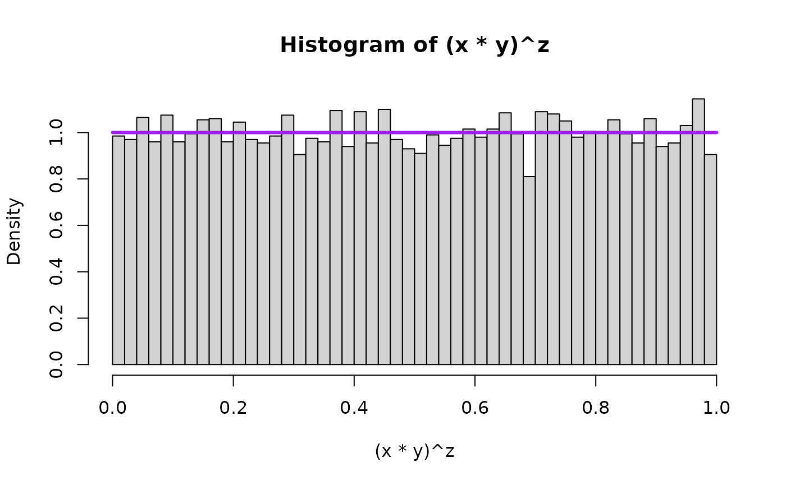
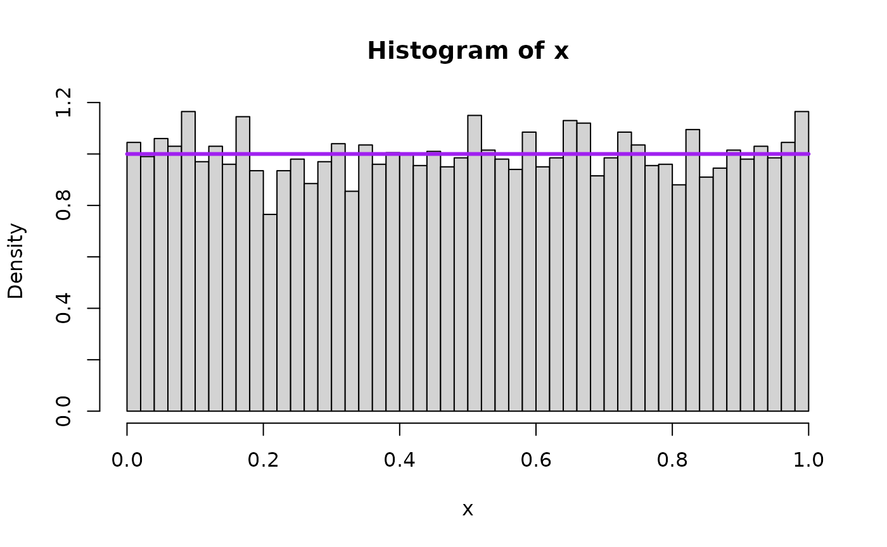
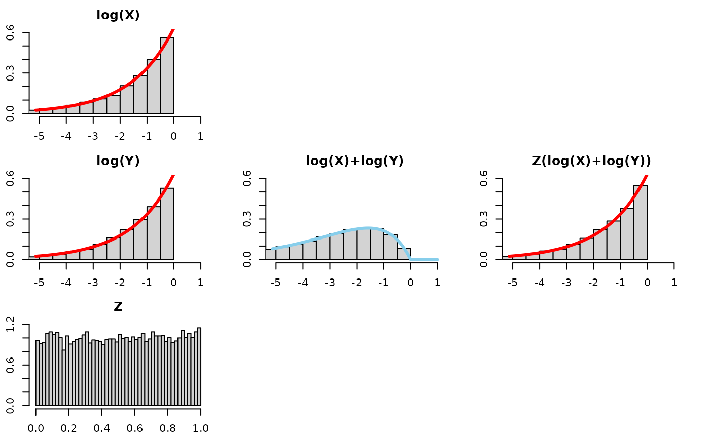
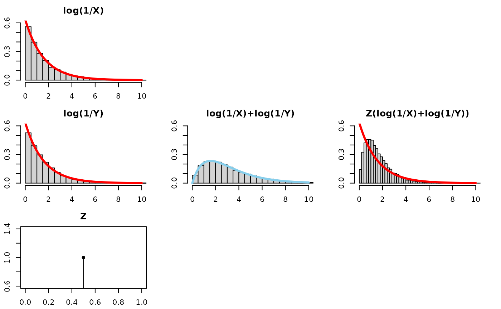

(XY)^Z Part I
Bruce J. Swihart
2025-05-16
Source:vignettes/articles/xy_to_the_z_part_i.Rmd
xy_to_the_z_part_i.RmdIN PROGRESS
I’m about 8 months late to the party, but a challenge problem from 3blue1brown caught my attention, as well as a call for intuitive approaches to explaining the result.
Here’s the challenge mode for all you math whizzes. Sample three numbers x, y, z uniformly at random in [0, 1], and compute (xy)^z. What distribution describes this result?
Answer: It’s uniform!
I know how to prove it, but haven’t yet found the “aha” style explanation where it feels expected or visualizable. If any of you have one, please send it my way and I’ll strongly consider making a video on it.
– Grant Sanderson of 3blue1brown, 2024-09-10
While this relation and proofs of the result have been around for a while, as shown in this Math SE post from 2012, the renewed notoriety is how it caught my attention – and even then 8 months after the fact. I agree none of the suggested proofs have a slam-dunk visualization.
This response
video by Dr Mihai Nica includes an explanation has some similarities
to the approaches on this page and connects it to Poisson processes and
some other statistical results. I focus more on visualizing the
distributions and thinking of the result in terms of convolution and
scale mixture, which should be no surprise given these concepts are
commonly used in the underlying theory of mvpd. I also
generalize the result, showing that the original problem is a specific
instance of this more general result.
Restatement of the Relations
Overview Sketch
The original problem could be stated as:
If
- X ~ U(0,1)
- Y ~ U(0,1)
- Z ~ U(0,1)
Then
- (XY)^Z ~ U(0,1)
We first note that Beta(, 1) is a generalization of the U(0,1). For , Beta(1,1) is the same as U(0,1). I had a hunch the result would generalize, so for , we state:
If
- X ~ Beta(, 1)
- Y ~ Beta(, 1)
- Z ~ U(0,1),
Then
- (XY)^Z ~ Beta(, 1)
We then can generalize the distribution of Z to Beta(1, K-1), where K is the number of random variates being multiplied. In the original problem, K=2, because X and Y were being multiplied and raised to Z. Well, for K=2, Beta(1,K-1) is Beta(1,1) which is U(0,1). That leaves us with:
If
~ Beta(, 1)
~ Beta(, 1)
…
~ Beta(, 1)
~ Beta(1, K-1)
Then
- ~ Beta(, 1)
Turns out there is another computed quantity with a distribution:
- ~ Pareto(scale = 1, shape=)
We will make pictures of these computed quantities to show they follow these distributions in a bit. While they are useful, they are more confirmatory than intuition building.
For building intuition, I view things on the
log-scale, which changes the computed quantities from
a product raised to a power to a sum multiplied
by a scalar. Since these are random variables, this amounts to
a convolution and then a change of scale (aka “scale mixtures”). As one
can see, this challenge problem is right up mvpd’s
alley!
Going forward, it may be useful to know that
If
- X ~ Beta(, 1)
Then
- ~ ReflectedExp()
- ~ ReflectedGamma(K, )
and
- = ~ Exp()
- ~ Gamma(K, )
As well as
- If iid U(0,1) then min() ~ Beta(1,K-1).
We’ll make lots of pictures of these down below. Quickly, I’ll state what we are showing with those pictures.
In short, for intuition, the sum of a bunch of exponentials is a gamma, and to recover the original exponential distribution, the sum is multiplied by a beta.
Well, that’s the way you’d say it at coffee before a seminar to seem cool. The parts that fill it in a bit more:
In short, for intuition, the sum of K iid exponential random variables with common rate is a gamma(K,). To recover the original exponential distribution, the sum is multiplied by a beta(1, K-1) random variable.
For those that would like a density argument:
The sum S~Gamma(K,) has density
The product ZS ~ Gamma(K, /Z) has density
Since Z is random we want to integrate it out with respect to its distribution. So the puzzle becomes for what does the integral solve to the exponential density ?
=
-
If , then
- = =
- =
- =
In closing, we generalize X, Y being iid Beta(, 1) (which for is U(0,1)) and restate the result for the computed quantity . We then consider a similar, computed quantity as well. For each quantity we build intuition by thinking through the distributions on the log-scale.
Concise statements
Result 1 and 2 generalizes the U(0,1) of the X, Y, and (XY)^Z to Beta(, 1).
For iid Beta(, 1) and independent
Result 1:
-
Beta(,
1)
- Which implies ReflectedExp()
Result 2:
-
Pareto(,
)
- Which implies Exp()
The original challenge problem is the special instance: and U(0,1) (because Beta(1, 1) is U(0,1)).
Result 1-K and 2-K generalizes the U(0,1) of the Z to Beta(1, K-1).
For iid Beta(, 1), and independent
Result 1-K:
-
Beta(,
1)
- Which implies ReflectedExp()
Result 2-K:
-
Pareto(,
)
- Which implies Exp()
The original challenge problem is the special and instance: and U(0,1) (because Beta(1, 1) is U(0,1)).
Also note this holds for K=1 because Beta(1,0) is the point mass (constant) 1 (in limit).
Sanity check: Result 1
Lets do a number of simulations and then plot the quantities to see
the theory in action for
Beta(,
1). That is, we will draw 10,000 random variates of each X, Y, and Z,
plot density histograms of those draws and of combinations of those
draws. (Quick note: One can increase this number in the .Rmd file linked
below the title by changing the global variable
nsim.switch. I kept it moderate for web building/loading
purposes; cranking it up allows the barplots to more accurately “fall in
line” with the overlaid density.)
We will also overlay the theoretical result – that is, the density that the mathematical/statistical theory says the quantity should take – in purple on top of the histogram. First for , the special uniform instance (because that is what started it all!) and as an arbitrary value bigger than 1 and as an arbitrary value smaller than 1.
alpha = 1
set.seed(1)
nsims <- nsim.switch
aa_x <- 1
aa_y <- 1
x <- rbeta(nsims,aa_x,1) ##runif(nsims,0,1)
y <- rbeta(nsims,aa_y,1) ##runif(nsims,0,1)
z <- runif(nsims,0,1)
hist((x*y)^z, breaks=50, freq=FALSE, xlim=c(0,1))
lines( seq(0,1,0.01),
dbeta(seq(0,1,0.01),aa_x,1),
type="l",
lwd=overlaid.dens.lwd,
col="purple"
)
hist(x, freq=FALSE, breaks=50, xlim=c(0,1))
lines( seq(0,1,0.01),
dbeta(seq(0,1,0.01),aa_x,1),
type="l",
lwd=overlaid.dens.lwd,
col="purple"
)
## compare mean, variance, and 2nd moment
prod <- (x*y)^z
mean(prod)
#> [1] 0.5000949
var(prod)
#> [1] 0.08372655
var(prod) + mean(prod)^2
#> [1] 0.3338215
mean(x)
#> [1] 0.501578
var(x)
#> [1] 0.0843729
var(x) + mean(x)^2
#> [1] 0.3359534


Log-scale for intuition building
Consider the log scale, which changes the relation from a product raised to a power into a sum multiplied by a number. In other words, a convolution (sum of two random variables) and a scale mixture (then multiplied by a random variable).
We will visualize this using 5 plots arranged in a 3x3 grid. The left column will show the distributions of each of the 3 components of consideration (log(X), log(Y), and Z), the middle column will just show the convolution of log(X) and log(Y), that is to say log(X)+log(Y), and the third one will show the scale mixture applied to the convolution. If a line appears on top of the histogram, that’s the theoretical result, and the bars falling nicely along the line shows agreement between the simulation and the expected theoretical result.
Take a look at this for alpha=1:
Quick observations –
- log(X): is a Reflected Exponential with rate
,
as is log(Y) and Z(log(X)+log(Y))!
- the bars fall along the red density line
- log(X) + log(Y): the convolution (i.e., sum) of two Reflected
Exponentials is more disperse and squattier than just one Reflected
Exponential. We know this already – think of adding two normals together
and the variance of the resultant Normal having the sum of the variances
of the original normals.
- the bars fall along a RefelectedGamma(2,) density
- Z(log(X)+log(Y)): to “recover” or “get back to” the original distribution before the convolution, log(X), we need to “tighten” or “gather” or “concentrate” the log(X)+log(Y) distribution. Multiplying it by a random number between 0 and 1 will do exactly that.
See for other values for alpha:

Sanity check: Result 2
Now we draw a bunch of random beta and uniform random variables and then plot the quantities to see the theory in action for Pareto(scale, shape). We will plot the theoretical result in purple on top of the histogram. First for , the special uniform instance (because that is what started it all for Result 1!) and as an arbitrary value bigger than 1 and as an arbitrary value smaller than 1.
alpha = 1.000
set.seed(1)
nsims <- nsim.switch
aa_x <- 1
aa_y <- 1
x <- rbeta(nsims,aa_x,1) ##runif(nsims,0,1)
y <- rbeta(nsims,aa_y,1) ##runif(nsims,0,1)
z <- runif(nsims,0,1)
hist((1/x*1/y)^z, breaks=nsim.switch, freq=FALSE, xlim=c(0,15), ylim=c(0,1))
lines( seq(0,100,0.01),
LNPar::dpareto(seq(0,100,0.01),1,alpha=aa_x),
type="l",
lwd=overlaid.dens.lwd,
col="purple"
)
hist(1/x, freq=FALSE, breaks=6e4, xlim=c(0,15), ylim=c(0,1))
lines( seq(0,100,0.01),
LNPar::dpareto(seq(0,100,0.01),1,alpha=aa_x),
type="l",
lwd=overlaid.dens.lwd,
col="purple"
)
## compare mean, variance, and 2nd moment
prod <- (1/x*1/y)^z
mean(prod)
#> [1] 8.878238
var(prod)
#> [1] 4277.258
var(prod) + mean(prod)^2
#> [1] 4356.082
mean(1/x)
#> [1] 10.28434
var(1/x)
#> [1] 32794.94
var(1/x) + mean(1/x)^2
#> [1] 32900.71


Log-scale for intuition building
Consider the log scale, which changes the relation from a product raised to a power into a sum multiplied by a number. In other words, a convolution (sum of two random variables) and a scale mixture (then multiplied by a random variable).
We will visualize this using 5 plots arranged in a 3x3 grid. The left column will show the distributions of each of the 3 components of consideration (log(X), log(Y), and Z), the middle column will just show the convolution of log(X) and log(Y), that is to say log(X)+log(Y), and the third one will show the scale mixture applied to the convolution.
Take a look at this for alpha=1:

Quick observations –
- log(X): is an Exponential(), as is log(Y) and Z(log(X)+log(Y))!
- log(X) + log(Y): the convolution (i.e., sum) of two Exponentials is
more disperse and squattier. We know this already – think of adding two
normals together and the variance of the resultant Normal having the sum
of the variances of the original normals.
- the bars fall along a
Gamma(2,)
density
- the bars fall along a
Gamma(2,)
density
- Z(log(X)+log(Y)): to “recover” or “get back to” the original distribution before the convolution, log(X), we need to “tighten” or “gather” or “concentrate” the log(X)+log(Y) distribution. Multiplying it by a random number between 0 and 1 will do exactly that.
See for other values for alpha:

Follow-up questions
Follow up questions means we can explore more. This was a top comment on the response video linked in the intro:
@JobBouwman 8 months ago Adding two exponentials will double the outcome. Then multiplying this with a random uniform scalar between 0 and 1 will on average half the result.
This comment in addition to the video helped inspire this document. The comment in particular inspired two questions of mine.
- Q: Why “1/2 on average” and not just “1/2 all the time with no variation”?
Let’s see what the resultant Z(log(1/X)+log(1/Y)) distribution would
look like if we replaced z<-runif(nsims, 0, 1) with
z <- rep(1/2, nsims) in the code. We will see it
“concentrates” too much and doesn’t recover the distribution of log(1/X)
– the bars go well above the red density line of the exponential:
- Q: Ok, so Z has to be random. But can it be 1/2 on average but with bounds bigger than 0,1 ?
Let’s see what the resultant Z(log(1/X)+log(1/Y)) distribution would
look like if we replaced z<-runif(nsims, 0, 1) with
z<-runif(nsims, -1, 2) in the code. The mean of Z is
1/2. However, Z is not bounded between 0 and 1. Hypothesis: even though
this Z will “1/2 on average” it fails to recover the distribution
log(1/X) because Z values bigger than 1 fail to “tighten” the
distribution. Compounding the problem is that Z values below 0 (negative
values) flip/reflect values across the y-axis. See below:

Bonus: What about 3 exponentials?
We have already stated Results 1-K and 2-K which generalized things to summing K exponentials. However, let’s build some intuition pretending we did not have those results and just tried to add a 3rd variable to the procedure we have been doing to this point.
Let’s see what the resultant Z(log(1/X)+log(1/Y)+log(1/A)) distribution would look like, with X,Y,A as iid beta(0.633,1) and an independent Z iid U(0,1)

It looks like we need more tightening from Z. Let’s tinker. Instead
of multiplying by 1/2 on average, perhaps we need to multiply by 1/3 on
average? Let’s leave Z as a uniform, with positive values smaller than 1
that average to a 1/3. Let’s replace
z<-runif(nsims, 0, 1) with
z<-runif(nsims, 0, 2/3) in the code:

While that was fun, this modification (shortening the range of the uniform) does not quite seem to “recover” the distribution of log(1/X). It seems we needed more Z values that are smaller to fill in the part of the density near 0.
There’s another way to get Z to be “1/3 on average”. That is, we could draw two uniforms, V ~ uniform(0,1) and W ~ uniform(0,1) and let Z=min(V,W) (This insight was shown by Dr. Mihai Nica’s follow-up video. ). Note, this is the same as letting Z ~ beta(1,3-1). The 3 is bolded, because this is the number of exponentials that are being summed. This gives us a way to generalize to K exponentials being summed.
- nailed it!
Let’s try it for summing 10 exponentials.
This means we need Z to be “1/10 on average”. That is, we could draw 9 uniforms let Z be the minimum of those 9 uniforms. This is the same as letting Z ~ beta(1,10-1). The 10 is bolded, because this is the number of exponentials we’re summing, and it generalizes to any positive integer.
Be mindful of the x-axis and y-axis limits – they are not the same for every plot!

–>
All of these simulations and results are for a common . We consider the case unequal case in part II of this topic.
Miscellany / Notes to self / Stubs for future ideas
Looking at the inductive form, may provide insight as to why Z may not have a “recovering” distribution for a sum of more than 2 exponentials.